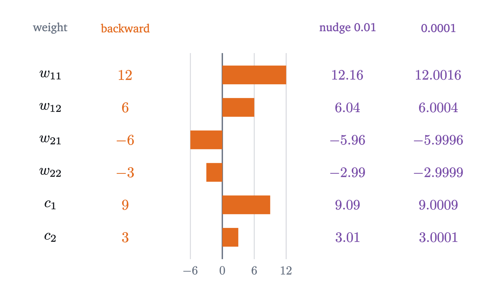
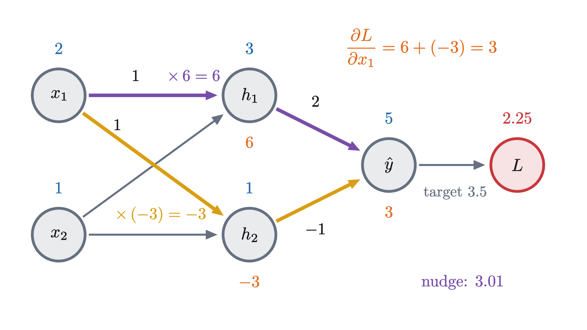
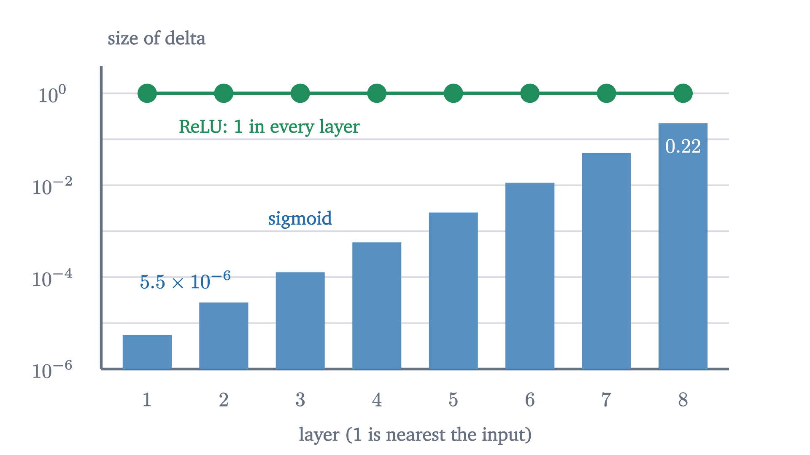

Backpropagation: the chain rule, organized
Run a tiny network forward with real numbers, get every weight's slope in one backward pass, prove the delta recursion, and check it by nudging each weight.
AssumesWhat a neural network computesGradient descent: learning by walking downhillThe product rule and the chain rule, seen
The network above has six weights. To train it by gradient descent we need six numbers: for each weight, how fast the loss changes when that weight alone is changed. There is an obvious way to get them. Raise one weight by a hair, run the network again, and see how far the loss moved.
For six weights that is fine. A large modern network has about a billion weights, and one run through it costs about a billion multiplications, so the obvious way costs $10^{18}$ multiplications for a single step of training. Yet such networks are trained every day, because there is a method that delivers all billion slopes for about the price of three runs. It is called backpropagation. We will find it by doing the obvious thing first, on the six-weight network, and noticing how much of the work is repeated.
A small network, run forward
The previous lesson built networks out of neurons: a neuron takes a weighted sum of its inputs, called its score, and applies the bend $\operatorname{ReLU}(z) = \max(0, z)$. Our network has two inputs $x_1, x_2$, two hidden neurons and one output:
Here $w_{jk}$ is the weight from input $k$ into hidden neuron $j$, and $c_j$ the weight from hidden neuron $j$ to the output. (Biases are left out to keep the count at six; they return later.) The weights at this moment of training are
We have one training example: the input $(x_1, x_2) = (2, 1)$ with target $y = 3.5$. The loss is the squared error of the earlier lessons, $L = (\hat y - y)^2$.
Pause and try
Compute $z_1$, $z_2$, $h_1$, $h_2$, $\hat y$ and $L$ for this example.
Show answerHide answer
$z_1 = 1 \cdot 2 + 1 \cdot 1 = 3$ and $z_2 = 1 \cdot 2 - 1 \cdot 1 = 1$. Both scores are positive, so $h_1 = 3$ and $h_2 = 1$. Then $\hat y = 2 \cdot 3 - 1 \cdot 1 = 5$, and $L = (5 - 3.5)^2 = 2.25$.
Computing every value in order, from the inputs to the loss, is called the forward pass.
Nudge one weight and follow the nudge
Start with $w_{11}$ and do the obvious thing: raise it from $1$ to $1.01$, leave everything else alone, and run the network again. Now $z_1 = 1.01 \cdot 2 + 1 = 3.02$, so $h_1 = 3.02$. The output is $\hat y = 2 \cdot 3.02 - 1 = 5.04$ and the loss is $(5.04 - 3.5)^2 = 1.54^2 = 2.3716$. The loss rose by $0.1216$ when the weight rose by $0.01$, a rate of $12.16$.
Look at how the nudge traveled. It was multiplied by $x_1 = 2$ on entering $z_1$, by 1 through the bend, because the neuron is on, by $c_1 = 2$ on the way to $\hat y$, and by $3.04$ at the loss. With a nudge of $0.0001$ the same computation gives a rate of $12.0016$. The rates are heading for $12 = 2 \times 1 \times 2 \times 3$, where the last factor, 3, is the derivative of $(\hat y - 3.5)^2$ with respect to $\hat y$ at $\hat y = 5$, namely $2(\hat y - 3.5) = 3$.
That rates multiply along a chain of dependencies is the chain rule: if $L = f(u)$ and $u = g(w)$ with $f$ and $g$ differentiable, then $\frac{dL}{dw} = f'(u)\,g'(w)$. Our chain has four links, $w_{11} \to z_1 \to h_1 \to \hat y \to L$. Writing $\partial$ for a partial derivative, the rate of change with respect to one variable while the others are held fixed,
Each factor is local: it involves one link of the chain and is read off from numbers the forward pass already computed.
Pause and try
Find $\partial L / \partial w_{12}$ by multiplying along its chain. Then check it by raising $w_{12}$ to $1.01$ and recomputing the loss.
Show answerHide answer
The chain is $w_{12} \to z_1 \to h_1 \to \hat y \to L$. Only the first link differs: $w_{12}$ multiplies $x_2 = 1$. So $\partial L/\partial w_{12} = 3 \cdot 2 \cdot 1 \cdot 1 = 6$. Check: $z_1 = 2 + 1.01 = 3.01$, $\hat y = 6.02 - 1 = 5.02$, $L = 1.52^2 = 2.3104$, a rise of $0.0604$ for a nudge of $0.01$: a rate of $6.04$.
The same factors keep coming back
Write out the product for every weight, with the factors in order from the loss end:
| weight | chain of factors | slope |
|---|---|---|
| $c_1$ | $3 \cdot h_1 = 3 \cdot 3$ | $9$ |
| $c_2$ | $3 \cdot h_2 = 3 \cdot 1$ | $3$ |
| $w_{11}$ | $3 \cdot 2 \cdot 1 \cdot 2$ | $12$ |
| $w_{12}$ | $3 \cdot 2 \cdot 1 \cdot 1$ | $6$ |
| $w_{21}$ | $3 \cdot (-1) \cdot 1 \cdot 2$ | $-6$ |
| $w_{22}$ | $3 \cdot (-1) \cdot 1 \cdot 1$ | $-3$ |
Every product starts with the same 3. The products for $w_{11}$ and $w_{12}$ share their first three factors, $3 \cdot 2 \cdot 1 = 6$, and that shared piece has a meaning of its own: it is $\partial L/\partial z_1$, the rate at which the loss responds to the score of neuron 1. Computing the products separately repeats that work, twice here and a thousand times in a network with a thousand inputs.
So compute the shared pieces once, starting from the end they share, and store each at its node. This is the backward pass:
- At the output: $\dfrac{\partial L}{\partial \hat y} = 2(\hat y - y) = 3$.
- Output weights: $\hat y = c_1h_1 + c_2h_2$, so $\dfrac{\partial L}{\partial c_j} = \dfrac{\partial L}{\partial \hat y} \cdot h_j$, giving $9$ and $3$.
- Hidden values: by the same formula, $\dfrac{\partial L}{\partial h_j} = \dfrac{\partial L}{\partial \hat y} \cdot c_j$, giving $6$ and $-3$.
- Through the bend: $\dfrac{\partial L}{\partial z_j} = \dfrac{\partial L}{\partial h_j} \cdot \operatorname{ReLU}'(z_j)$. The derivative of $\operatorname{ReLU}$ is 1 at a positive score and 0 at a negative one. Both scores are positive, so these are again $6$ and $-3$.
- First-layer weights: $z_j = w_{j1}x_1 + w_{j2}x_2$, so $\dfrac{\partial L}{\partial w_{jk}} = \dfrac{\partial L}{\partial z_j} \cdot x_k$, giving $12, 6, -6, -3$.

One sweep from right to left produced all six slopes, the gradient of the loss. The negative slope of $w_{21}$ says that raising it lowers the loss: it raises $h_2$, which enters the too-high output with weight $-1$.
Checking against nudges
A slope from the backward pass can always be tested with the obvious method. For a weight $w$ and a small $\varepsilon > 0$, the finite-difference quotient is
with every other weight held fixed. Its limit as $\varepsilon \to 0$ is the partial derivative, so for small $\varepsilon$ it must be close to the backward pass’s number.

All six agree, and the disagreement that remains is 100 times smaller for a nudge 100 times smaller. For $w_{11}$ we can see why. With $w_{11} = 1 + \varepsilon$ the output is $5 + 4\varepsilon$, so the loss is $(1.5 + 4\varepsilon)^2 = 2.25 + 12\varepsilon + 16\varepsilon^2$ and the quotient is $12 + 16\varepsilon$: the slope, plus an error proportional to $\varepsilon$. Running this comparison to test backpropagation code is called a gradient check.
When a value feeds two neurons
In this network each weight has a single route to the loss, which is why one chain of factors was enough. The input $x_1$ is different: it feeds both hidden neurons, so a nudge to it reaches the loss along two routes. We do not train inputs, but in a deeper network $x_1$ would be a hidden value of an earlier layer, and the backward pass would need $\partial L/\partial x_1$ to continue past it.
Nudge first. With $x_1 = 2.01$: $z_1 = 3.01$ and $z_2 = 1.01$, so $\hat y = 6.02 - 1.01 = 5.01$ and $L = 1.51^2 = 2.2801$, a rise of $0.0301$. The rate is $3.01$.
Pause and try
Multiply the factors along each of the two routes from $x_1$ to $L$, using $\partial L/\partial z_1 = 6$ and $\partial L/\partial z_2 = -3$. How do the two products combine to give a number near $3.01$?
Show answerHide answer
On its way into $z_1$, $x_1$ is multiplied by $w_{11} = 1$, so the first product is $6 \cdot 1 = 6$. On its way into $z_2$ it is multiplied by $w_{21} = 1$, so the second is $-3 \cdot 1 = -3$. Neither is near $3.01$. Their sum, $3$, is.

Adding the contributions of the routes is the chain rule for functions of several variables.
We use this theorem without proof; it is in any multivariable calculus text. It is believable from the first-order approximation of the lesson on gradients: a small change in $t$ changes each $u_k$ by about $\frac{du_k}{dt}\Delta t$, and small changes $\Delta u_k$ change $F$ by about $\sum_k \frac{\partial F}{\partial u_k}\Delta u_k$. For us $t$ is $x_1$, the $u_k$ are $z_1$ and $z_2$, and
Backpropagation in general
The same computation works in a network of any size, once the bookkeeping has names.
Our network has $N = 2$, with $\varphi_1 = \operatorname{ReLU}$, $\varphi_2(z) = z$, activations $a^{(1)} = (h_1, h_2)$, second-layer weights $w^{(2)}_{1j} = c_j$, all biases zero, and $\ell(a) = (a - y)^2$.
With the input and all weights fixed, the loss is determined by the scores of any one layer, because the layers above can be run from them: $L = F_l\bigl(z^{(l)}\bigr)$. The number stored at each node in step 4 was a partial derivative of this function.
Match the parts to the hand computation. Part 1 was step 1: $\delta^{(2)}_1 = 2(\hat y - y) = 3$. Part 2 was steps 3 and 4: $\delta^{(1)}_j = \operatorname{ReLU}'(z_j)\,c_j \cdot 3$, a sum with one term because there is one output; the slope with respect to $x_1$ was the same sum with two terms. Part 3 was steps 2 and 5.
Why one backward pass is cheap
Count multiplications. The forward pass uses each weight once, in the product $w^{(l)}_{ji}\,a^{(l-1)}_i$. The backward pass uses each weight once in the sum of part 2, and each weight’s slope takes one more product in part 3. (There is also one $\varphi'$ per neuron, and there are far fewer neurons than weights.) So the backward pass costs about two forward passes, and the whole gradient about three, whatever the number of weights.
Nudging costs one forward pass for the baseline and one more per weight. For our six weights that is 7 passes against 3; for $10^9$ weights it is a billion and one against 3. Nudging also returns approximations, such as $12.16$, where the backward pass returns the derivative itself. The saving comes from the direction of travel: there is one loss and there are many weights, and working backward from the loss, every stored delta is shared by all the weights upstream of it.
Using the gradient: one step, then XOR
Gradient descent moves every weight a small step against its slope, $w \leftarrow w - \eta\,\partial L/\partial w$, with a learning rate $\eta > 0$. Take $\eta = 0.01$ and the six slopes $12, 6, -6, -3, 9, 3$:
A new forward pass gives $z_1 = 2.70$, $z_2 = 1.15$, $\hat y = 1.91 \cdot 2.70 - 1.03 \cdot 1.15 = 3.9725$ and $L = 0.4725^2 \approx 0.223$. One step took the loss from $2.25$ to $0.22$.
Now a task with more than one example. In the previous lesson we chose by hand the weights of a network that computes XOR: output 1 at $(1, 0)$ and $(0, 1)$, output 0 at $(0, 0)$ and $(1, 1)$. Backpropagation can find such weights. Give each neuron a bias, $h_j = \operatorname{ReLU}(w_{j1}x_1 + w_{j2}x_2 + b_j)$ and $\hat y = c_1h_1 + c_2h_2 + c_0$, and take as the loss the mean of the four squared errors. The gradient of a mean is the mean of the gradients, so each step runs a forward and a backward pass per point and averages. Start from $w_1 = (1, 0.5)$, $w_2 = (0.5, 1)$, $b = (0, -0.5)$, $c = (1, -1)$, $c_0 = 0$ and take 200 steps with $\eta = 0.1$.
The loss falls from $0.3125$ to $0.0002$, and the outputs at the four points go from $0, 1, 0, 0.5$ to $0.02, 0.99, 0.99, 0.01$.
Backpropagation computes the gradient exactly, and that is all it does. Whether following the gradient leads somewhere good is a separate question. Start the same network with every first-layer weight and bias negative. Then both neurons are off at all four inputs, so $\operatorname{ReLU}'(z_j) = 0$ makes both hidden deltas zero by part 2, and the slopes of every weight except $c_0$ are zero by part 3. Only $c_0$ moves. It settles at $0.5$, the mean of the targets, and the loss stays at $0.25$ forever.
Two limits: kinks and vanishing gradients
The theorem assumed each activation differentiable at each score that occurs. $\operatorname{ReLU}$ has no derivative at $z = 0$, where its slope jumps from 0 to 1. A score of exactly 0 is rare, and software uses the value 0 there.
A slower failure is built into part 2. Going back one layer multiplies a delta by $\varphi'(z)$ and by a weight. For the sigmoid $\sigma(z) = 1/(1 + e^{-z})$ of the lesson on classification, $\sigma'(z) = \sigma(z)\bigl(1 - \sigma(z)\bigr)$, and a product $p(1 - p)$ with $0 < p < 1$ is at most $\frac14$. So unless the weights are large, each layer of sigmoids shrinks the deltas by a factor of four or more, and the early layers of a deep network receive slopes too small to learn from. This is the vanishing gradient problem. It is one of the main reasons deep networks use ReLU, whose derivative is exactly 1 wherever the neuron is on.

Worked examples
Stepping back
The hard part was seeing that the six products overlap, and that the network itself organizes the overlap: the factors shared by all weights that feed a neuron are that neuron’s delta. A delta depends on the deltas of the next layer, so the order of work is forced: begin at the loss and move toward the inputs.
The same idea works for any computation built from differentiable steps; under the name reverse-mode automatic differentiation it is what machine learning software does. A network trained this way can drive its training loss very low. The next lesson asks whether a low training loss means the model has learned anything.
Check yourself
In some network, a weight $w$ runs from a neuron with activation $4$ to a neuron whose delta is $-0.5$. What is $\partial L/\partial w$, and which way does gradient descent move $w$?
Problems
“The lesson’s network” has $w_{11} = w_{12} = w_{21} = 1$, $w_{22} = -1$, $c_1 = 2$, $c_2 = -1$.
Problem 1
For the lesson’s network and the input $(2, 1)$, change the target to $y = 6$. Find all six slopes. Which weights will gradient descent increase?
Show solutionHide solution
The forward pass does not involve the target until the loss: $h = (3, 1)$ and $\hat y = 5$. Now $L = (5 - 6)^2 = 1$ and $\partial L/\partial \hat y = 2(5 - 6) = -2$. Output weights: $-2 \cdot 3 = -6$ and $-2 \cdot 1 = -2$. Hidden values: $-2 \cdot 2 = -4$ and $-2 \cdot (-1) = 2$; both neurons are on, so these are the deltas. First layer: $\partial L/\partial w_{11} = -4 \cdot 2 = -8$, $\partial L/\partial w_{12} = -4 \cdot 1 = -4$, $\partial L/\partial w_{21} = 2 \cdot 2 = 4$, $\partial L/\partial w_{22} = 2 \cdot 1 = 2$. Gradient descent increases the weights with negative slope: $c_1$, $c_2$, $w_{11}$ and $w_{12}$.
Problem 2
In the lesson’s example, write the loss as a function of $\varepsilon$ when $w_{22}$ is replaced by $-1 + \varepsilon$, for $|\varepsilon| < 1$. Use it to give the finite-difference quotient exactly, and evaluate it for $\varepsilon = 0.1$ and $\varepsilon = 0.001$.
Show solutionHide solution
$z_2 = 2 + (-1 + \varepsilon) = 1 + \varepsilon$, which is positive for $|\varepsilon| < 1$, so $h_2 = 1 + \varepsilon$ and $\hat y = 6 - (1 + \varepsilon) = 5 - \varepsilon$. The loss is $(1.5 - \varepsilon)^2 = 2.25 - 3\varepsilon + \varepsilon^2$. The quotient is $\frac{-3\varepsilon + \varepsilon^2}{\varepsilon} = -3 + \varepsilon$. For $\varepsilon = 0.1$ it is $-2.9$ and for $\varepsilon = 0.001$ it is $-2.999$. The error of the quotient is exactly $\varepsilon$, and its limit is the backward pass’s $-3$.
Problem 3
A fully connected network has layers of sizes 100 (input), 50, 10 and 1, with a bias on every neuron. (a) How many parameters does it have? (b) How many multiplications of a weight by an activation does one forward pass use? (c) Compare the number of such multiplications needed to get the whole gradient by nudging with the lesson’s estimate for backpropagation.
Show solutionHide solution
(a) Weights: $100 \cdot 50 + 50 \cdot 10 + 10 \cdot 1 = 5510$. Biases: $50 + 10 + 1 = 61$. Total $5571$. (b) One per weight: $5510$. (c) Nudging needs a baseline pass and one pass per parameter, $5572$ passes, or $5572 \times 5510 \approx 30.7$ million multiplications. Backpropagation costs about three forward passes, $3 \times 5510 = 16{,}530$. The ratio is about $1860$, a third of the number of parameters.
Problem 4
Give the lesson’s network biases: $z_j = w_{j1}x_1 + w_{j2}x_2 + b_j$ and $\hat y = c_1h_1 + c_2h_2 + c_0$, with $b_1 = b_2 = c_0 = 0$ at present. (a) Explain why a bias is a weight on an extra input fixed at 1, and deduce the slope formula for a bias from the one for a weight. (b) For the input $(2, 1)$ and target $3.5$, find $\partial L/\partial b_1$, $\partial L/\partial b_2$ and $\partial L/\partial c_0$.
Show solutionHide solution
(a) The term $b_j$ in the score equals $b_j \cdot 1$, which is what a third input fixed at 1 with weight $b_j$ would contribute. A weight’s slope is the delta at its head times the activation at its tail, here 1, so the slope of a bias is the delta of its neuron. (b) With zero biases the forward pass is unchanged, so the deltas are those of the lesson: $\delta_1 = 6$, $\delta_2 = -3$ for the hidden neurons and $3$ for the output. Hence $\partial L/\partial b_1 = 6$, $\partial L/\partial b_2 = -3$ and $\partial L/\partial c_0 = 3$.
Problem 5
A network is a chain with one neuron per layer and the activation $\varphi(z) = z^2$ in both layers: $z_1 = w_1x$, $a_1 = z_1^2$, $z_2 = w_2a_1$, $a_2 = z_2^2$, and $L = (a_2 - 3)^2$. Take $x = 1$, $w_1 = 2$, $w_2 = 0.5$. (a) Find $\partial L/\partial w_1$ and $\partial L/\partial w_2$ by backpropagation. (b) Write $L$ as an explicit formula in $w_1$ and $w_2$, differentiate it directly, and compare.
Show solutionHide solution
(a) Forward: $z_1 = 2$, $a_1 = 4$, $z_2 = 2$, $a_2 = 4$, $L = 1$. Since $\varphi'(z) = 2z$: $\delta_2 = \frac{\partial \ell}{\partial a_2}\varphi'(z_2) = 2(4 - 3) \cdot 4 = 8$, and $\delta_1 = \varphi'(z_1)\,w_2\,\delta_2 = 4 \cdot 0.5 \cdot 8 = 16$. Then $\partial L/\partial w_2 = \delta_2 a_1 = 8 \cdot 4 = 32$ and $\partial L/\partial w_1 = \delta_1 x = 16$. (b) $a_1 = w_1^2$ and $a_2 = (w_2w_1^2)^2 = w_2^2w_1^4$, so $L = (w_2^2w_1^4 - 3)^2$. Then $\partial L/\partial w_1 = 2(w_2^2w_1^4 - 3) \cdot 4w_2^2w_1^3 = 2 \cdot 1 \cdot 4 \cdot 0.25 \cdot 8 = 16$, and $\partial L/\partial w_2 = 2(w_2^2w_1^4 - 3) \cdot 2w_2w_1^4 = 2 \cdot 1 \cdot 2 \cdot 0.5 \cdot 16 = 32$. They agree, and backpropagation never formed the composite formula.
Problem 6
(Vanishing gradients.) A chain has $n$ layers with one sigmoid neuron each and every weight equal to $w$. (a) Prove that $\sigma'(z) \le \frac14$ for all $z$. (b) Show that $|\delta^{(1)}| \le \bigl(\frac{|w|}{4}\bigr)^{n-1}|\delta^{(n)}|$. (c) Evaluate the bound for $w = 1$ and $n = 10$.
Show solutionHide solution
(a) $\sigma'(z) = p(1 - p)$ with $p = \sigma(z)$ in $(0, 1)$. Since $p(1 - p) = \frac14 - (p - \frac12)^2 \le \frac14$, the claim follows, with equality only at $p = \frac12$, that is $z = 0$. (b) With one neuron per layer, part 2 of the theorem reads $\delta^{(l)} = \sigma'(z^{(l)})\,w\,\delta^{(l+1)}$, so $|\delta^{(l)}| \le \frac{|w|}{4}|\delta^{(l+1)}|$. Applying this $n - 1$ times, from layer $n - 1$ down to layer 1, gives the bound. (c) $(1/4)^9 = 1/262144 \approx 3.8 \times 10^{-6}$.
Problem 7
(Logistic regression is a one-layer case.) A single sigmoid neuron computes $z = \sum_i w_ix_i + b$ and $a = \sigma(z)$, and is trained on an example with label $y \in \{0, 1\}$ using the cross-entropy loss $\ell(a) = -y\ln a - (1 - y)\ln(1 - a)$. Use parts 1 and 3 of the theorem to show that $\delta = a - y$ and $\partial L/\partial w_i = (a - y)\,x_i$.
Show solutionHide solution
Differentiate the loss: $\dfrac{\partial \ell}{\partial a} = -\dfrac{y}{a} + \dfrac{1 - y}{1 - a} = \dfrac{-y(1 - a) + (1 - y)a}{a(1 - a)} = \dfrac{a - y}{a(1 - a)}$. The activation’s derivative is $\sigma'(z) = a(1 - a)$. By part 1, $\delta = \dfrac{a - y}{a(1 - a)} \cdot a(1 - a) = a - y$; the awkward factors cancel. By part 3, with the inputs $x_i$ as the activations of layer 0, $\partial L/\partial w_i = (a - y)\,x_i$ and $\partial L/\partial b = a - y$. This is the gradient of the lesson on classification: the error in the predicted probability times the input.